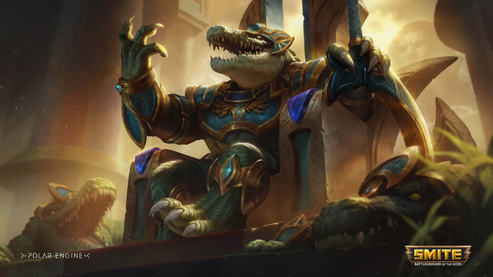

Dominando al Dios Cocodrilo

Sobek es uno de los guardianes más agresivos y divertidos de Smite 2. Su capacidad para desplazar enemigos y sobrevivir en el corazón de la batalla lo convierte en una pieza clave para cualquier equipo.
1. La Estrategia de la Pasiva
Gracias a Acometida de Bendición, Sobek gana protecciones cada vez que golpea. Para jugar bien, no debes tener miedo de intercambiar ataques básicos entre habilidades.
2. El Combo de Control (CC)
- Carga Ofensiva (Habilidad 1): Es tu herramienta principal para desplazar al enemigo.
- Latigazo (Habilidad 2): Úsalo para interrumpir saltos rivales.
- Golpe de Hacha (Habilidad 3): Maximiza tu curación personal.
3. Cómo usar la Ultimate: Acechador de las Profundidades
En Smite 2 2026, la Ultimate de Sobek no es solo para matar. Úsala para zonificar y recuperar maná rápidamente.